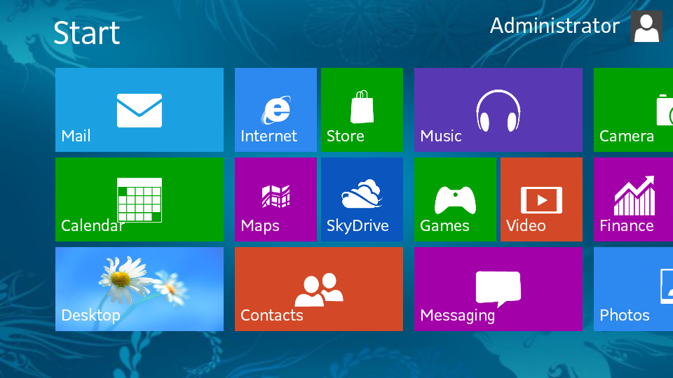

Flat design - thiết kế phẳng là một phương pháp không sử dụng thêm bất kỳ một hiệu ứng nào như đổ bóng, dập nổi, góc xiên, độ dốc ... để tạo ra giao diện. Thiết kế phẳng giống như cái tên của nó, mọi thứ đều ở dạng hai chiều mọi góc cạnh đều dược tối giản sao cho đơn giản nhất có thể. Mọi yếu tố từ hộp, khung ảnh cho đến nút chọn đều mạnh mẽ, rõ ràng.
Một ví dụ điển hình là Windows 8.
Nhìn ví dụ trên dễ dàng thấy các thông tin được hiển thị trong các ô hình ảnh giúp người dùng có thể hiểu được nội dung cảu cái học sẽ click vào. Việc trình bày to, rõ thế này vô cùng tiện lợi đối với các thiết bị cảm ứng. Và rõ ràng Windowns 8 được tối ưu cho các thiết bị có màn hình cảm ứng.
Tính đơn giản trong thiết kế phẳng tạo điều kiện cho các nhà thiết kế dễ dàng hơn trong việc tạo ra các sản phẩm của mình. Thay vì tập trung vào các hiệu ứng và hình ảnh bắt mắt cho sản phầm thiết kế của mình thì họ chỉ cần chú ý vào những yếu tốt ít phức tạp hơn. Trong khi xu hướng thiết kế mô phỏng chú trọng việc làm thế nào để thể hiện giống nhất một đối tượng thì thiết kế phẳng ngược lại, những icon vô cùng đơn giản, đơn giản từ màu sắc cho tới hình ảnh minh họa icon.
Mặc dù đơn giản nhưng không mất đi sự tinh tế. Điều này tạo sự mới mẻ cho người dùng khi truy cập vào trang web khi mà xu thế thiết kế mô phỏng đã trở nên quen thuộc.
Thiết kế phẳng cũng như các phong cách thiết kế khác nhưng mặt bằng không bị chồng chéo lên nhau mà có sự phân chia rõ ràng. Thiết kế phẳng mang lại cái nhìn và cảm giác riêng biệt, nó dự trên trật tự, sắp xếp các chi tiết thiết kế để người đọc dễ hiểu, dễ đọc và tương tác tốt hơn.
Sử dụng màu sắc để làm nền nên người dùng sẽ không bị rối mắt trước một loạt các hình ảnh mang tính 3D như vẫn thường thấy. Khi người thiết kế biết cách phối tông hiêu quả với những gam màu đối lập mạnh sẽ tạo ra những hình ảnh bắt mắt.
Các màu sắc phổ biến thường dùng trong thiết kế phẳng
Typography là các sắp xếp các phông chữ cách điệu theo một trật tự hoặc quy luật riêng để khiến người sử dụng phải chú ý. Typography là một trong những lý do mang lại tính hiệu quả cho thiết kế phẳng. Những chi tiết trong thiết kế phẳng đơn giản nên Typography rất quan trọng, font chữ cần phải phù hợp với toàn thiết kế. Nội dung của câu chữ thường đi thẳng vào cấn đề. Điển hình là Windown 8 có thể dễ dàng thấy được điều này. Việc có thể xem trực tiếp thông tin ứng dụng mà không cần phải ứng dụng đó lên thực sự là trải nghiệm mới lạ và tiện dụng.
- Skeuomorphic là phong cách thiết kế mô phỏng sao cho giống thật nhất có thể bằng cách sử dụng các hình ảnh dễ liên tưởng đến vật thể thực tế và áp dụng các hiệu ứng tạo độ sâu.
- Skeuomorphic có một số khuyết điểm: giao diện đôi khi khó quan sát, tốn nhiều không gian màn hình thiết bị di động cho các trang trí không cần thiết, hạn chế sự sáng tạo. Việc áp dụng Skeuomorphic sẽ khiến các thiết bị động chưa mạnh phần cứng, thời lượng pin hạn chế càng tốn nhiều tài nguyên hơn để thể hiện Skeuomorphic trên màn hình.
- Với sự đơn giản, thực tế và tương tác thiết kế phẳng hoàn toàn có thể khắc phục những khuyết điểm của thiết kế Skeumorphic.
Phần DEMO cở bản về Flat Design đã được thể hiện trên trang web này.
Phần DEMO thứ hai